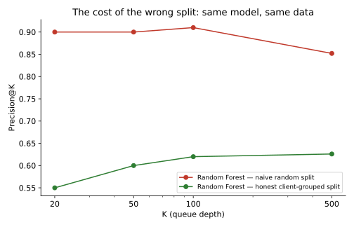
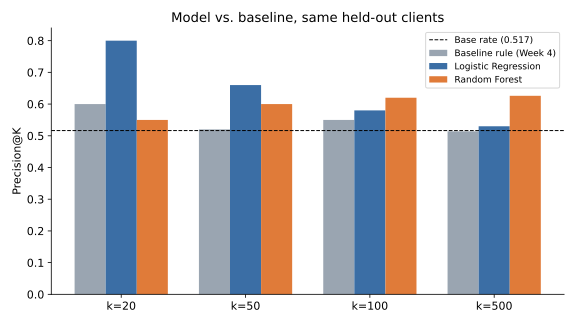
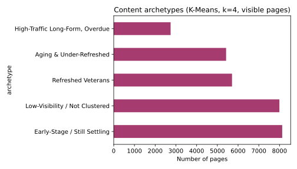
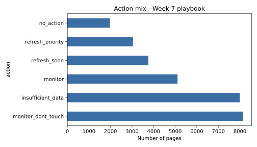

Abstract. Content teams managing large SEO portfolios can't manually review every page each week — the question is which ones to look at first. Using a 30,000-page, 32-client FlyRank sample, I built a transparent rule-based baseline and compared it against Logistic Regression and Random Forest models predicting content decline (a 30-day-vs-previous-30-day impression drop). Under an honest client-holdout split, Logistic Regression leads at the top of the review queue (precision@20 = 0.800 vs. a 0.517 base rate) while Random Forest is stronger further down (precision@500 = 0.626). The more important finding came from validation itself: a naive random split overstated Random Forest's precision@20 by 35 points (0.900 vs. the honest 0.550) purely through client-level memorization. The result is a ranked, archetype-based action playbook with explicit human-review requirements and a stated no-automation list.
An SEO content team managing thousands of pages across dozens of clients can't read every page every week. Some pages are quietly losing search visibility; others just look that way because they're brand new and still settling into their ranking. The practical question isn't "build a perfect classifier" — it's "give an editor a short, trustworthy list of where to look first."
This project builds that list end to end: a simple baseline rule, two learned models compared against it honestly, and a content-action playbook that a human can actually use — including an explicit statement of what the system should never be trusted to decide on its own.
This paper uses the FlyRank ML Internship's starter release: content_refresh_anonymized.csv, 30,000 rows, one row per pseudonymized content item, spanning 32 pseudonymized clients, with trailing-90-day search performance metrics. This is a single snapshot, not the full ~79-million-row production warehouse also available to the program.
Excluded, and why: trend_direction and trend_pct are excluded from every feature set because they define the label itself (see Methodology). provider_used and model_used were excluded for high missingness unrelated to the question asked. No rows were dropped by activity level — low-visibility pages are scored separately as insufficient_data rather than filtered out, to avoid a silent survivorship bias.
Public-safety note: all identifiers referenced anywhere in this project are the dataset's own pseudonyms. No real client names, URLs, or search queries appear in this paper or its underlying repo.
A page is labeled "declining" if its 30-day impressions dropped more than 10% versus the previous 30 days — FlyRank's own trend_direction definition, not one I invented.
All features are knowable at the moment a review decision would actually be made: impressions_90d, clicks_90d, ctr, avg_position, engagement_rate, ai_traffic_pct, content_age_days, days_since_last_update, word_count, content_type, main_intent.
A transparent scoring rule (no fitted weights): staleness magnitude plus how far a page's click-through rate falls short of its own search-position tier's benchmark, both continuous, both capped.
Logistic Regression, then Random Forest (300 trees, depth 8) — chosen for a yes/no label evaluated as a ranking problem, following the toolkit that simplicity should be earned past, not skipped.
Splits were grouped by client_id (75% / 25%, seed 42), not random. This mattered more than expected:

trend_direction and trend_pct are excluded from every feature set because they're the label's own source columns. This was verified, not just asserted: deliberately adding trend_pct back into the Random Forest's inputs pushed precision@K to a perfect 1.000 across every K, with trend_pct alone carrying 87.7% of the model's feature importance — the textbook signature of label leakage, confirming the exclusion rule actually matters rather than being a box-ticking exercise.
All numbers below come from the same held-out clients, the same metric, computed in the same run.
| k | Baseline | Logistic Regression | Random Forest |
|---|---|---|---|
| 20 | 0.600 | 0.800 | 0.550 |
| 50 | 0.520 | 0.660 | 0.600 |
| 100 | 0.550 | 0.580 | 0.620 |
| 500 | 0.514 | 0.530 | 0.626 |
Base rate on this test split: 0.517.

The practical reading: a team that only ever reviews its top 20-50 flagged pages weekly gets more value from Logistic Regression. A team working deeper into the queue gets more value from Random Forest.
Every page in the sample was scored and grouped into one of four archetypes (K-Means, k=4, visible pages only — named from their own cluster centers, not borrowed labels):

2,745 pages · smallest group, largest reach per page
Refresh first — the audience impact per page touched is highest here.
5,423 pages · older, stale, moderate traffic
The textbook refresh candidate — refresh soon.
8,130 pages · youngest, freshest, best position
Flagged high-risk by the raw model, but this is treated as early-lifecycle noise, not a genuine problem — leave alone until pages age past ~90 days.
5,708 pages · oldest, but recently updated
The lowest-risk group once kept fresh — maintain current cadence. This independently confirms FlyRank's own portfolio-level finding that refreshing old content works.

Monitoring: recompute precision@50 monthly against actual outcomes; watch the Early-Stage archetype's share of the portfolio for drift. Retrain triggers: a sustained 10+ point drop in precision@50 versus this run's 0.660, a newly onboarded client with a very different content-age or content-type mix, or a meaningful shift in feature missingness rates from what this analysis assumed.
Full code, seeds (42 throughout), and every intermediate notebook are public in the project repository: